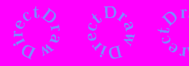

| <<Obiekt g³ówny i powierzchnie Spis Strona g³ówna Bezpoœredni dostêp... >> |
Wyœwietlanie nieruchomych obrazków, czym zajmowaliœmy siê w poprzedniej czêœci tego kursu, to nie jest powód, dla którego stworzono DirectX ;-). Do takiej zabawy w zupe³noœci wystarczy "go³e" WinAPI. Byæ mo¿e jednak zauwa¿y³eœ, ¿e animacja ju¿ tam nieco kuleje, i to nawet przy takiej malutkiej pi³eczce, a co dopiero kiedy musielibyœmy poruszaæ obiektem o rozmiarach ca³ego ekranu? No w³aœnie, zgroza. I po to jest DirectX. Warto by wreszcie wykorzystaæ jego mo¿liwoœci...
Kulkom damy ju¿ spokój. Dla odmiany zrobimy sobie napis, wiruj¹cy na kolorowym tle. Napis robimy sobie sami, umieszczaj¹c kolejne klatki w jednym pliku, obok siebie:

Animuj¹c nasz¹ pi³eczkê mieliœmy bardzo proste zadanie: by³a tylko jedna bitmapa, któr¹ wystarczy³o wyœwietlaæ w ró¿nych miejscach ekranu, ¿eby stworzyæ wra¿enie ruchu. Tym razem wyœwietlamy ci¹gle w tym samym miejscu, ale musimy te¿ odmalowywaæ t³o po ka¿dej klatce, no i za ka¿dym razem rysujemy inny fragment bitmapy.
¯eby wiedzieæ, któr¹ z tych klatek w danym momencie rysujemy, potrzeba nam oczywiœcie zmiennej. Dobrze te¿ bêdzie mieæ strukturê RECT która wska¿e konkretnie, który fragment ca³ej bitmapy bêdziemy wyœwietlaæ. Nazwijmy tê strukturê kadrem, poniewa¿ tak¹ w³aœnie pe³ni rolê. Tym razem wszystkie klatki bêdziemy wyœwietlaæ zawsze w tym samym miejscu, ale dla porz¹dku deklarujemy sobie drug¹ strukturê RECT, która bêdzie pokazywa³a miejsce na ekranie, gdzie wyl¹duje ka¿da kolejna klatka.
Teraz kwestia odmierzania czasu. W kursie WinAPI u¿yliœmy w tym celu timera tworzonego funkcj¹ SetTimer, a o up³ywaj¹cym czasie sygnalizowa³ nam komunikat WM_TIMER. Wspomnia³em te¿, ¿e to kiepskie rozwi¹zanie. Generalnie dok³adne mierzenie up³ywu czasu w systemie wielow¹tkowym, jakim jest Windows, to bardzo skomplikowane zagadnienie; rozwi¹zanie zadowalaj¹ce profesjonalnych twórców gier to ustawienie timera w osobnym w¹tku, jednak tego na razie nie bêdziemy robiæ, bo co tu gadaæ, proste to nie jest. Wykorzystamy za to inny, te¿ nienajgorszy sposób.
Mowa o funkcji GetTickCount. Zwraca ona liczbê milisekund, które up³ynê³y od chwili uruchomienia Windowsa (a wiêc przy okazji dowiedzieliœmy siê, jak sprawdziæ, ile brat siedzi przy kompie ;-)). Nie ma ¿adnych argumentów i jest typu DWORD. Dlatego bêdziemy potrzebowali dwóch zmiennych tego w³aœnie typu, ¿eby aktualny czas zapamiêtaæ do naszych niecnych celów. Przyda siê te¿ kilka sta³ych oraz zmienne do zapamiêtania wymiarów pojedynczej klatki. Ogólnie nasze podstawowe deklaracje bêd¹ wygl¹da³y tak:
|
const WORD MaxKlatek = 9; const WORD CEL_X = 75, CEL_Y = 10; DWORD StaryCzas = 0, NowyCzas; WORD Klatka = 0, Szer, Wys; RECT Kadr, Cel, Tlo; LPDIRECTDRAW lpDD = NULL; LPDIRECTDRAWSURFACE lpEkran = NULL; LPDIRECTDRAWSURFACE lpBufor = NULL; LPDIRECTDRAWSURFACE lpObrazek = NULL; LPDIRECTDRAWSURFACE lpTlo = NULL; |
Powy¿sze zmienne powinny byæ globalne, czyli umieszczone na zewn¹trz WinMain. Mamy tu a¿ cztery powierzchnie: lpEkran bêdzie powierzchni¹ g³ówn¹, do lpObrazek za³adujemy bitmapê z klatkami animacji, a do lpTlo... t³o :-). Teraz bêdzie nam potrzebny g³ówny obiekt DirectDraw, zwarty i gotowy do pracy ;-).
|
if(DirectDrawCreate(NULL, &lpDD, NULL) != DD_OK) { MessageBox(hwnd,"B³¹d przy tworzeniu obiektu DD","Fatalnie!",MB_ICONSTOP); //lpDD->Release(); return FALSE; } lpDD->SetCooperativeLevel(hwnd, DDSCL_EXCLUSIVE | DDSCL_FULLSCREEN); lpDD->SetDisplayMode(800, 600, 16); |
Ustawi³em tutaj tryb 16-bitowy, poniewa¿ moja karta nie obs³uguje innych :D. Jeœli chcesz albo jeœli musisz, zmieñ 16 na 32 (albo na cokolwiek innego, ale wtedy bêdziesz siê sam póŸniej mêczy³ z kluczowaniem kolorów :-P).
Mamy gotowy obiekt DD, wypada³oby zawczasu zadbaæ równie¿ o jego prawid³owe zwolnienie. Najlepiej stwórzmy sobie w tym celu osobn¹ funkcjê, która przy okazji bêdzie nam zwalnia³a wszystkie powierzchnie - o ile istniej¹. Wywo³anie tej funkcji wstawimy sobie póŸniej w miejsce wykomentowanej instrukcji lpDD->Release() (powy¿ej).
|
void Sprzatanie() { if(lpEkran != NULL) { lpEkran->Release(); lpEkran = NULL; } if(lpObrazek != NULL) { lpObrazek->Release(); lpObrazek = NULL; } if(lpTlo != NULL) { lpTlo->Release(); lpTlo = NULL; } if(lpDD != NULL) { lpDD->Release(); lpDD = NULL; } } |
Od tej pory wywo³ujemy Sprzatanie, kiedy tylko coœ zwi¹zanego z DD nam siê nie powiedzie, np. nie uda siê utworzyæ powierzchni. Oprócz tego oczywiœcie musimy posprz¹taæ przy zakoñczeniu programu, a wiêc najlepiej wstawiæ Sprzatanie w obs³udze komunikatu WM_DESTROY.
Nasze bitmapy (t³o i "w³aœciw¹" animacjê) nale¿a³oby teraz gdzieœ wczytaæ. To oczywiœcie pikuœ dla ciebie, poniewa¿ przeczyta³eœ bardzo uwa¿nie kurs WinAPI ;-). Tak samo uwa¿nie przeœledzi³eœ poprzedni¹ czêœæ kursu DirectDraw i potrafisz przenieœæ grafikê ze zwyk³ego kontekstu HDC na powierzchniê DD. Teraz mamy a¿ dwie bitmapy do wczytania, wiêc ¿eby nie produkowaæ nadmiernych iloœci kodu, napiszemy sobie porêczn¹ funkcyjkê, której bêdzie wystarczy³o podaæ nazwê pliku BMP, a ona zwróci nam wskaŸnik do gotowej powierzchni:
|
LPDIRECTDRAWSURFACE WyczarujPowierzchnie(LPCSTR NazwaPliku) { LPDIRECTDRAWSURFACE temp = NULL; HBITMAP hbmBitmapa, hbmOld; BITMAP bmp; HDC hdc, hdcTmp; hbmBitmapa = (HBITMAP)LoadImage(NULL, NazwaPliku, IMAGE_BITMAP, 0, 0, LR_LOADFROMFILE); GetObject(hbmBitmapa, sizeof(bmp), &bmp); hdcTemp = CreateCompatibleDC(NULL); hbmOld = (HBITMAP)SelectObject(hdcTemp, hbmBitmapa); //Tworzenie powierzchni DDSURFACEDESC ddsd; ddsd.dwSize = sizeof(ddsd); ddsd.dwFlags = DDSD_CAPS | DDSD_WIDTH | DDSD_HEIGHT; ddsd.ddsCaps.dwCaps = DDSCAPS_OFFSCREENPLAIN | DDSCAPS_SYSTEMMEMORY; ddsd.dwWidth = bmp.bmWidth; ddsd.dwHeight = bmp.bmHeight; if(lpDD->CreateSurface(&ddsd, &temp, NULL) == DD_OK) { //Kopiowanie z kontekstu na powierzchniê temp->GetDC(&hdc); BitBlt(hdc, 0, 0, bmp.bmWidth, bmp.bmHeight, hdcTemp, 0, 0, SRCCOPY); temp->ReleaseDC(hdc); } //Tego ju¿ nie potrzebujemy SelectObject(hdcTemp, hbmOld); DeleteDC(hdcTemp); DeleteObject(hbmBitmapa); return temp; } |
Mamy nasz¹ funkcjê, która jest na tyle przydatna, ¿e dziêki niej stworzymy sobie dwie powierzchnie w dwóch linijkach, i na tyle g³upia, ¿e nie bêdzie siê zastanawia³a, czy tworzona powierzchnia to zwyk³a bitmapa, czy klatki animacji. Tak wiêc nie pobierzemy ju¿ sobie informacji o wymiarach bitmap z pliku. Wstawiamy wiêc "na chama" gotowe wartoœci do naszych prostok¹tów, a wczeœniej korzystamy z tego, coœmy tak pracowicie przed chwil¹ wklepywali i tworzymy dwie pomocnicze powierzchnie:
|
//Utworzenie powierzchni lpTlo = WyczarujPowierzchnie("back.bmp"); lpObrazek = WyczarujPowierzchnie("obrazek.bmp"); if(lpTlo == NULL || lpObrazek == NULL) { MessageBox(hwnd,"Nici z utworzenia powierzchni","O ¿esz!",MB_ICONSTOP); Sprzatanie() return FALSE; } //Uzupe³niamy dane o prostok¹tach SetRect(&Tlo, 0, 0, 300, 150); Szer = 150; Wys = 135; SetRect(&Kadr, 0, 0, Szer, Wys); SetRect(&Cel, CEL_X, CEL_Y, CEL_X + Szer, CEL_Y + Wys); |
Z powierzchniami, które bêd¹ przechowywaæ nasze bitmapy, siê uporaliœmy. Teraz pora siê zaj¹æ mechanizmem animacji. Skoro korzystamy z GetTickCount, to pêtla komunikatów w obecnej postaci nie przyda nam siê w samym procesie animacji, a wrêcz bêdzie przeszkadzaæ. Dlatego czeka j¹ ma³y remont:
|
while(msg.message != WM_QUIT) { if(PeekMessage(&msg,NULL,0,0,PM_REMOVE)) { TranslateMessage(&msg); DispatchMessage(&msg); } else { //Rysowanie klatek bêdzie tutaj... } } |
Warunek pêtli zosta³ podobny - wychodzimy z niej, kiedy user zamknie okno (bêdziemy dzia³aæ w trybie pe³noekranowym, wiêc bêdzie siê to da³o zrobiæ praktycznie tylko wciskaj¹c Alt+F4). Zmieni³a siê zaœ funkcja, któr¹ u¿ywamy do pobierania komunikatu z kolejki. PeekMessage (w odró¿nieniu od GetMessage) pobiera komunikaty "w locie", nie zatrzymuj¹c siê, jeœli kolejka jest pusta. Dziêki temu w momencie, kiedy nie s¹ akurat obs³ugiwane jakieœ Bardzo Wa¿ne Komunikaty (czyli w powy¿szym bloku else), mo¿emy sobie spokojnie rysowaæ obrazki. Dodatkowo parametr PM_REMOVE okreœla, ¿e ka¿dy pobrany komunikat bêdzie jednoczeœnie usuwany z kolejki, no bo na co ma tam czekaæ jak g³upi? ;-)
Zastanówmy siê, co wpisaæ w ten blok else. Przede wszystkim musimy tam ca³y czas sprawdzaæ, czy ju¿ czas :-). Na kolejn¹ klatkê, oczywiœcie. Za³ó¿my, ¿e czas bêdzie na ni¹ co 100 milisekund. Mechanizm zmiany klatek jest bardzo prosty:
|
NowyCzas = GetTickCount(); if(StaryCzas + 100 <= NowyCzas) { Renderuj(); //Nowa klatko, pora na ciebie! ++Klatka; if(Klatka >= MaxKlatek) Klatka = 0; StaryCzas = NowyCzas; //<-- Tutaj bêdziemy kadrowaæ bitmapê... } |
Poniewa¿ kolejne klatki znajduj¹ siê w pliku obok siebie i maj¹ dok³adnie te same wymiary, kadrowanie to czynnoœæ banalna:
|
Kadr.left = Klatka * Szer; Kadr.right = Kadr.left + Szer; |
W pionie kadru oczywiœnie nie musimy ruszaæ, poniewa¿ klatki mamy w bitmapce u³o¿one poziomo.
Pora na najwa¿niejszy etap: utworzenie powierzchni ekranu. Moglibyœmy to zrobiæ analogicznie, jak w poprzedniej czêœci kursu, jednak taka powierzchnia jest raczej ma³o przydatna do animacji, poniewa¿ nie daje mo¿liwoœci podwójnego buforowania. Musielibyœmy utworzyæ osobno jakiœ bufor, w nim wykonywaæ wszystkie operacje graficzne, a nastêpnie kopiowaæ jego zawartoœæ na powierzchniê ekranu; mo¿na i tak, ale to ma³o efektywny sposób. Znacznie lepiej bêdzie skorzystaæ ze specjalnego mechanizmu udostêpnionego w DirectDraw: tworzenia ³añcucha powierzchni.
£añcuch taki mo¿e siê sk³adaæ z dowolnej liczby powierzchni, z których jedna jest g³ówna i pe³ni rolê powierzchni ekranu. Tylko jedna powierzchnia w ³añcuchu mo¿e byæ w danym momencie g³ówn¹, a wiêc widoczn¹ na ekranie. Specjaln¹ instrukcj¹ mo¿na jednak zmieniæ aktualn¹ g³ówn¹ powierzchniê na nastêpn¹ w ³añcuchu. Kolejnoœæ ustalamy przy tworzeniu ³añcucha. Oczywiœcie jeœli mamy w tym ³añcuchu tylko dwie powierzchnie (a tak w³aœnie bêdzie w poni¿szym przyk³adzie), to mo¿e byæ tylko jedna kolejnoœæ. Oto jak zrobiæ takie cudo:
|
DDSURFACEDESC ddsd; ddsd.dwSize = sizeof(ddsd); ddsd.dwFlags = DDSD_CAPS | DDSD_BACKBUFFERCOUNT; ddsd.ddsCaps.dwCaps = DDSCAPS_PRIMARYSURFACE | DDSCAPS_COMPLEX | DDSCAPS_FLIP; ddsd.dwBackBufferCount = 1; if(lpDD->CreateSurface(&ddsd,&lpEkran,NULL) != DD_OK) { MessageBox(hwnd,"Buforów niestety nie bêdzie...","Co za pech!",MB_ICONSTOP); Sprzatanie() return FALSE; } |
Wiêc co my tu mamy? Jak pewnie wiesz, pole dwFlags okreœla, które z pozosta³ych pól struktury ddsd s¹ prawid³owe. Tym sposobem aktywowaliœmy sobie pole dwBackBufferCount, które okreœla, ile tylnych buforów potrzebujemy do ³añcucha. Nasz ³añcuch ma siê sk³adaæ z dwóch buforów, jeden jest powierzchni¹ g³ówn¹, wiêc pozostaje dok³adnie 1, co te¿ wpisujemy we wspomniane pole. Z kolei pole ddsCaps.dwCaps okreœla nam dodatkowe w³aœciwoœci naszej powierzchni. Sta³¹ DDSCAPS_PRIMARYSURFACE ju¿ znamy, nowoœci to: DDSCAPS_COMPLEX (oznacza, ¿e tworzymy ³añcuch powierzchni) oraz DDSCAPS_FLIP (oznacza, ¿e powierzchnie w ³añcuchu mo¿na ze sob¹ zamieniaæ).
Mamy wiêc nasz ³añcuch, tylko jak po nim rysowaæ? Na razie dysponujemy tylko wskaŸnikiem lpEkran, a wiêc mo¿emy tylko wyœwietlaæ obrazki bezpoœrednio na ekranie. A chcieliœmy mieæ podwójne buforowanie, czyli potrzebny nam bêdzie jeszcze wskaŸnik na tylny bufor, czyli ten chwilowo schowany w ³añcuchu :-). ¯eby wyd³ubaæ z ³añcucha odpowiedni wskaŸnik, skorzystamy z us³ug oferowanych przez funkcjê GetAttachedSurface. Przyda nam siê te¿ (kolejny raz) struktura ddsd:
|
ddsd.ddsCaps.dwCaps = DDSCAPS_BACKBUFFER; lpEkran->GetAttachedSurface(&ddsd.ddsCaps, &lpBufor); |
Funkcja GetAttachedSurface sprawdza pole ddsCaps.dwCaps i w zale¿noœci od tego, co jest tam wpisane, zwraca wskaŸnik do odpowiedniej powierzchni z ³añcucha.
Trzeba by siê teraz zaj¹æ przezroczystoœci¹ klatek. Gdybyœmy wykorzystywali tylko windowsowy GUI, by³oby z tym sporo roboty, bo musielibyœmy najpierw sporz¹dziæ maskê. W DirectX tego nie ma, ale za to jest problem z kolorami. Bêdzie nam potrzebna funkcja, która przekonwertuje podane wartoœci RGB na format obs³ugiwany przez DirectX. Co gorsza, kolor 16-bitowy jest zupe³nie ró¿ny od 32-bitowego, wiêc w zale¿noœci od tego, jaki tryb sobie ustawi³eœ przy tworzeniu obiektu g³ównego DD, powinieneœ wybraæ jedn¹ z poni¿szych funkcji:
|
WORD Kolor16(BYTE r, BYTE g, BYTE b) { return ((r >> 3) << 11) | ((g >> 2) << 5) | (b >> 3); } DWORD Kolor32(BYTE r, BYTE g, BYTE b) { return 0xFF000000 | (r << 16) | (g << 8) | b; } |
Wygl¹da mo¿e groŸnie, ale to tylko prosta zabawa w przestawianie bitów. Dziwne liczby w funkcji Kolor16 bior¹ siê st¹d, ¿e w kolorze 16-bitowym mamy po 5 bitów przeznaczonych na sk³adnik czerwony i niebieski, zaœ 6 bitów na sk³adnik zielony. Z kolei funkcja Kolor32 w powy¿szej postaci nie daje nam mo¿liwoœci ustawienia wartoœci sk³adnika alfa (ustawia go zawsze na maksa, czyli 255). Po prostu na razie nie jest on nam potrzebny. No dobra, pogadaliœmy o kolorkach, a teraz do rzeczy, czyli do kluczowania:
|
DDCOLORKEY ddck; ddck.dwColorSpaceLowValue = ddck.dwColorSpaceHighValue = Kolor16(255,0,255); lpObrazek->SetColorKey(DDCKEY_SRCBLT,&ddck); |
Aby dany zakres kolorów danej powierzchni nie by³ wyœwietlany, nale¿y po prostu wywo³aæ funkcjê SetColorKey, wpisuj¹c uprzednio odpowiednie kolory do pól: dwColorSpaceLowValue (dolna granica zakresu kolorów) i dwColorSpaceHighValue (górna granica) struktury typu DDCOLORKEY. My chcemy wyeliminowaæ tylko jeden kolor, a mianowicie ró¿owy, dlatego dolna granica mo¿e byæ równa górnej.
Mamy, co chcieliœmy, pozostaje ju¿ tylko napisaæ serce programu - funkcjê Renderuj. To ju¿ doprawdy najprostsza czêœæ ca³ego zadania:
|
void Renderuj() { lpBufor->Blt(&Tlo,lpTlo,&Tlo,DDBLT_WAIT,NULL); lpBufor->Blt(&Cel,lpObrazek,&Kadr,DDBLT_KEYSRC | DDBLT_WAIT,NULL); lpEkran->Flip(NULL,DDFLIP_WAIT); } |
Pierwsza instrukcja maluje t³o. Zauwa¿, ¿e za ka¿dym razem kopiujemy je w ca³oœci, chocia¿ animacja zamazuje tylko fragment t³a. Animacji to zbytnio nie spowalnia... Skorygowanie tego drobiazgu pozostawiam tobie. Druga instrukcja rysuje aktualn¹ klatkê. Tutaj powinieneœ zwróciæ uwagê na now¹ flagê - DDBLT_KEYSRC. Jak siê zapewne domyœlasz, s³u¿y ona do powiadomienia funkcji Blt, ¿e ta ma skorzystaæ z kluczowania kolorów. Wreszcie, na koñcu mamy now¹ metodê - Flip. U¿ywamy jej do zamienienia ze sob¹ buforów wchodz¹cych w sk³ad ³añcucha - w naszym przypadku przedniego z tylnym. Dziêki tej operacji obrazek, pracowicie rysowany w tylnym buforze ma szanse ujrzeæ œwiat³o dzienne ;-).
To wszystko na razie. Jeœli szukasz jakichœ przyk³adów do tej czêœci kursu i szukasz ich w dziale Download, to s³usznie czynisz :-).
| <<Obiekt g³ówny i powierzchnie Spis Strona g³ówna Bezpoœredni dostêp... >> |